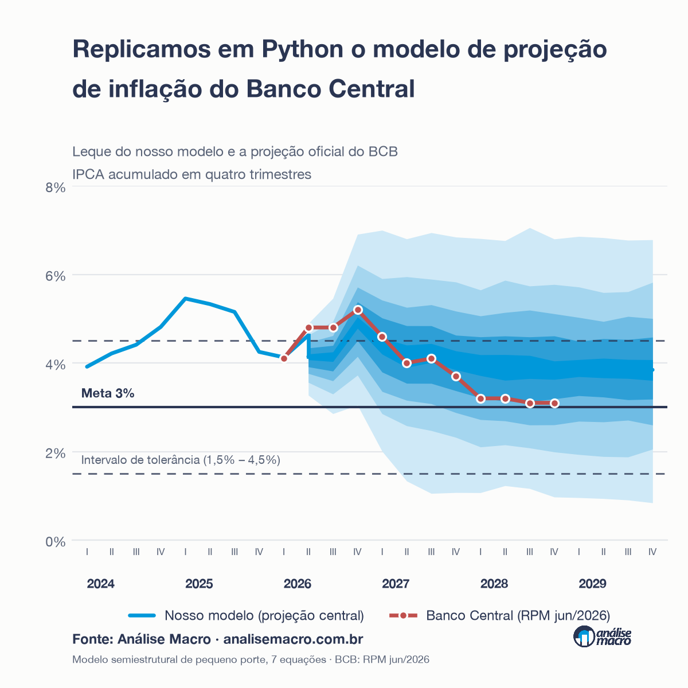

Replicando em Python o modelo de projeção de inflação do Banco Central

O servidor MCP está no ar, é público e gratuito. Cole esta URL como conector personalizado no Claude (Configurações → Connectors) e peça “projete a inflação com a Selic a 12,5% e o câmbio a R$ 5,60”:
https://mpp-mcp.analisemacro.workers.dev/mcpTutorial passo a passo, escrito para quem não é desenvolvedor: Como usar o MCP do Modelo de Pequeno Porte.
O problema
O Banco Central projeta a inflação com um conjunto de modelos. O mais transparente deles é o Modelo de Pequeno Porte (MPP): um modelo semiestrutural deliberadamente parcimonioso, cuja função é menos prever com máxima acurácia do que organizar de forma clara o raciocínio condicional que sustenta a decisão de política monetária.
O BCB publica a estrutura das equações nos boxes dos Relatórios de Inflação e, desde 2020, as tabelas de parâmetros estimados. Mas não publica o código nem a base de dados. Para quem quer entender o modelo por dentro — e não apenas ler suas projeções —, isso é uma parede.
Este projeto atravessa essa parede: reconstrói o modelo do zero, em Python, e mede o quão perto se chega.
O que foi feito
A regra do trabalho foi não presumir nada. Cada equação, cada defasagem, cada transformação teve de ser rastreada até uma fonte documental — e, onde a fonte era silenciosa, isso foi registrado como lacuna, não preenchido com palpite.
O ponto de partida foi uma implementação funcional em EViews, do curso de modelos de bancos centrais. Duas etapas de engenharia reversa foram necessárias:
- Recuperar as fórmulas das séries derivadas — hiato do produto, hiato de juros, juro neutro — que não estavam em nenhum script, mas no histórico de comandos gravado dentro do workfile.
- Decodificar o formato binário
.wf1para extrair as séries numéricas. O formato é proprietário e não documentado; foi preciso mapear a estrutura de registros byte a byte.
A validação dessa etapa foi feita contra as próprias identidades internas do EViews, com erro nulo ou da ordem da precisão de máquina.
O modelo
Sete equações estimadas e treze identidades contábeis, em frequência trimestral.
| Bloco | Papel |
|---|---|
| Curva IS | Hiato do produto responde ao juro real |
| Curva de Phillips | Inflação de livres, com verticalidade imposta |
| Expectativas | Ancoradas na tendência de longo prazo |
| Regra de Taylor | Selic reage ao desvio das expectativas |
| Paridade de juros | Câmbio reage ao diferencial de juros |
| Preços administrados | Repasse do petróleo em reais |
| Sazonalidade | Dessazonalização dos preços livres |
O que distingue esta versão: Selic, câmbio e preços administrados são endógenos. Isso cria um bloco simultâneo dentro do trimestre — as expectativas dependem do hiato, o hiato do juro real, o juro real da Selic, a Selic das expectativas, o câmbio do diferencial de juros — resolvido por iteração de ponto fixo.
A consequência econômica é direta: um aperto monetário passa a apreciar o câmbio, e a apreciação realimenta a inflação. O canal cambial de transmissão, ausente quando o câmbio é exógeno, torna-se operante.
A base de dados
Toda a base foi recoletada das fontes primárias — SGS e Olinda do Banco Central, SIDRA do IBGE, FRED, NOAA e Federal Reserve de Nova York — replicando as transformações originais. Isso torna o exercício reproduzível e, mais importante, atualizável: três comandos e o modelo roda com os dados de hoje.
Duas regras de agregação merecem nota por serem contraintuitivas e por divergirem entre si na fonte original:
- IPCA e componentes: variações mensais agregadas ao trimestre por soma aritmética, não por composição.
- IPA agrícola e industrial: agregados por acumulação multiplicativa.
A aderência da recoleta à base original:
| Série | Erro médio absoluto | Correlação |
|---|---|---|
| Câmbio médio | 0,0000 | 1,000000 |
| Fed Funds | 0,0000 | 1,000000 |
| CPI Estados Unidos | 0,0041 | 0,999973 |
| IPCA cheio | 0,0105 | 0,999972 |
| Hiato do produto | 0,0453 | 0,999360 |
| Expectativa Focus 12m | 0,0425 | 0,999264 |
Reprodução exata para câmbio e Fed Funds; correlação acima de 0,999 nas demais. Os resíduos são atribuíveis a revisões do IBGE e à escolha do dia útil de referência — não há divergência estrutural.
Os resultados
Validação econômica
O teste mais exigente disponível é comparar os multiplicadores do modelo com os que o Banco Central publica:
| Choque | Modelo | BCB (jun/2024) |
|---|---|---|
| Selic +1 p.p. por 4 trimestres | −0,37 p.p. | −0,27 p.p. |
| Depreciação cambial de 10% | +0,79 p.p. | +0,96 p.p. |
| Coeficiente de Taylor (θ₃) | 1,66 | 1,30 – 2,03 |
O multiplicador de juros cerca a estimativa oficial, com o perfil temporal correto — resposta negativa, gradual, com pico no quinto trimestre. O coeficiente de Taylor cai dentro da faixa publicada pelo BCB, satisfazendo o princípio de Taylor.
Comparação com as projeções oficiais
Confrontando com o Relatório de Política Monetária de junho de 2026:
| Métrica | Valor |
|---|---|
| Erro absoluto médio (12 trimestres) | 0,47 p.p. |
| Diferença no primeiro trimestre | 0,03 p.p. |
| Viés médio | +0,21 p.p. |
E o resultado que mais importa: a projeção oficial do Banco Central situa-se dentro do leque estocástico do nosso modelo em todos os onze trimestres comparados — em sete deles, dentro da banda de 50% ou mais estreita. É o que a figura de capa mostra: a linha vermelha atravessa o interior do leque azul do começo ao fim.
As duas trajetórias não são, portanto, estatisticamente incompatíveis — apesar de os modelos subjacentes serem estruturalmente distintos.
As diferenças, que são o mais interessante
A divergência concentra-se no horizonte distante e decompõe-se em causas identificáveis:
- Preços livres ficam cerca de 1 p.p. abaixo do BCB, porque o modelo agregado não tem as curvas de Phillips setoriais — o BCB estima repasse cambial muito maior em alimentação no domicílio.
- Preços administrados ficam acima, porque o BCB usa modelos satélites item a item, com informação regulatória que um modelo agregado não possui.
- No longo prazo, o cenário oficial supõe fechamento do hiato do produto para −0,5%, pressão desinflacionária que o modelo não reproduz.
Nenhuma dessas diferenças é ruído. Todas apontam para componentes ausentes e nomeáveis — o que é, do ponto de vista de aprendizado, mais valioso que o acerto.
A distância honesta
Cabe uma ressalva que o projeto documenta em detalhe. Este não é o modelo vigente do Banco Central.
Em setembro de 2020 houve uma ruptura metodológica: o BCB passou a estimar o hiato do produto e o juro real neutro como variáveis latentes, por filtro de Kalman, com estimação bayesiana sobre a verossimilhança do sistema. O modelo aqui replicado pertence à linhagem anterior a essa ruptura.
Uma auditoria item a item contra a especificação vigente (boxe de junho de 2024):
| Métrica | Cobertura |
|---|---|
| Parâmetros do modelo agregado | ~40–45% |
| Sistema completo (agregado + desagregado) | ~25–30% |
| Arquitetura econométrica | 0% |
A última linha é a que importa. Não estamos a alguns ajustes do modelo vigente — estamos do outro lado de uma mudança de paradigma. As três maiores lacunas, em ordem de impacto: o bloco de variáveis latentes, as expectativas consistentes com o modelo, e as curvas de Phillips setoriais.
O servidor MCP
O motor do modelo está exposto como servidor MCP — o padrão aberto que permite a um assistente de IA chamar ferramentas externas. Na prática: você conversa com o Claude, informa as premissas, e ele devolve a projeção e o gráfico pronto.
| Ferramenta | O que faz |
|---|---|
mpp_projetar |
Roda o modelo sob as premissas; devolve a tabela trimestral |
mpp_grafico |
Gera o PNG (linha ou leque de incerteza) |
mpp_cenarios |
Compara dois conjuntos de premissas lado a lado |
mpp_info |
Explica o modelo, as premissas e as limitações |
Dez premissas são aceitas — selic, cambio, petroleo, inflacao_eua, fed_funds, cds, juro_neutro, expectativa_longo_prazo, cadeias_suprimento, el_nino —, cada uma como número único (constante) ou lista (um valor por trimestre). O que não for informado segue o cenário de referência.
O detalhe que muda a leitura
Selic e câmbio são endógenos. Sem premissa, o modelo os projeta pela regra de Taylor e pela paridade de juros: eles aparecem como resultado. Informá-los suspende essas equações — o que sai é um cenário condicional, não uma previsão do modelo. O servidor avisa disso sozinho.
Como roda
O modelo é resolvido dentro do Worker. Os coeficientes vêm da estimação em Python, exportados como snapshot; o solver foi reescrito em TypeScript e validado contra o Python com erro máximo de 5×10⁻⁵. O gráfico é montado em SVG e rasterizado por resvg compilado em WebAssembly.
Uma nota de implementação que custou tempo: importar o WASM no topo do módulo estoura o limite de inicialização do Worker e derruba o Durable Object. A solução é carregamento sob demanda — o WASM só entra quando alguém pede um gráfico.
Arquitetura
src/data/ coleta das fontes externas e construção da base
src/estimation/ as sete equações, com as restrições não lineares
src/models/ sistema completo: solução, estocástica, choques
src/visualization/ Tabela 2.2.1, Gráfico 2.2.9, IRFs, peças de divulgação
mcp/ servidor MCP em Cloudflare Workers
paper/ paper Quarto reprodutível (21 páginas)
docs/ especificação, versões, auditoria de lacunasTrês das sete equações têm coeficientes restritos, escritos no EViews como expressões dos próprios parâmetros — por exemplo, o multiplicador \((1 - 4c_1 - 4c_2)\) da inércia na curva de Phillips, que impõe a verticalidade de longo prazo. Isso impede o uso direto de mínimos quadrados; a solução foi uma formulação geral em que um offset absorve a parte não paramétrica da restrição.
Como atualizar
O ciclo é automatizado e leva três comandos:
python src/data/fetch_current.py # coleta das fontes externas
python src/data/build_current_dataset.py # reconstrói a base de estimação
python src/data/export_workbook.py # regera a planilha .xlsxO modelo se ajusta sozinho ao novo fim de amostra.
Reprodutibilidade
Nenhum número do paper é digitado à mão: todos vêm de um objeto de artefatos gerado pelos módulos de src/. As estimativas de referência ficam versionadas como JSON, permitindo detectar alterações não intencionais de comportamento entre execuções.
A planilha com toda a base de estimação — 4 abas, incluindo dicionário de dados com 52 variáveis e suas fontes — acompanha o projeto.
Próximos passos
A fronteira é o bloco de variáveis latentes: escrever o sistema em espaço de estados e estimar o hiato do produto como ciclo comum a quatro observáveis (PIB, Nuci, desocupação e Caged), por filtro de Kalman. É o que separa a linhagem replicada da linhagem vigente — e é também o pré-requisito das outras duas lacunas maiores.
Em breve, um curso novo mostrando essa reconstrução por dentro.